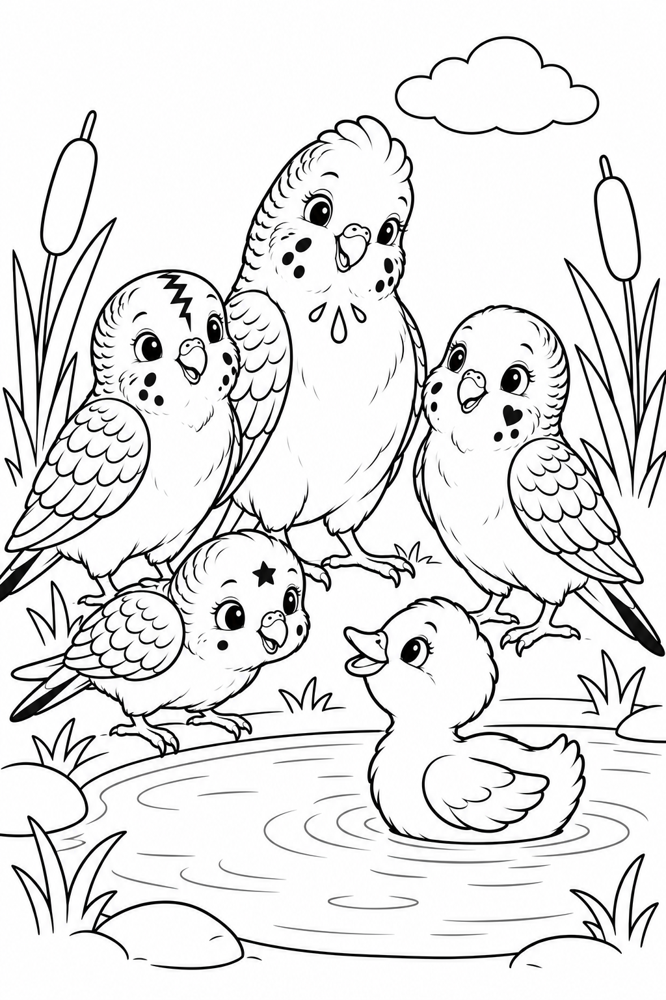

Pond Friend
A duckling stops by to say hello.

Choose Letter or A4 paper and fit to page. With a grown-up, open Print in your browser.

A duckling stops by to say hello.
Choose Letter or A4 paper and fit to page. With a grown-up, open Print in your browser.
